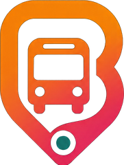

Binni
Rutas
OAXACA
Cargando el mapa…
☰
Buscar
✕
📍 Desde: buscando tu ubicación…
🔍 ¿A dónde vas?
✕ Limpiar
🛰️
2D
➤
📍
👀 Vi un Binni
👀 ¿Qué BinniBus viste?
✕
Se marca en tu ubicación para que todos sepan por dónde va. Anónimo.
Desliza hacia arriba para ver opciones ⌃